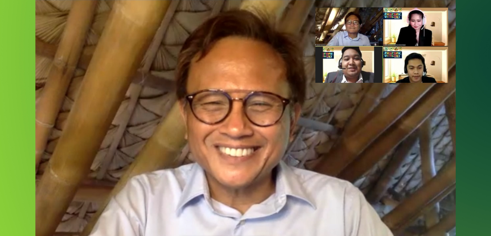

April 10, 2021
In the pursuit of progress, change is necessary for society to keep moving forward. Yet, with the limitations of the pandemic alongside emerging, evolving technologies, change may thrive in whole new ways, and today's youth, or the digital generation, plays a big part as the world continues to navigate the challenges of the times.
Last 10 April 2021, the College of Business and Accountancy (CBA) of Our Lady of Fatima University hosted the sixth episode of its Synergy Webinar Series 2 via the Zoom video conferencing platform. For the topic, "Being an Agent of Change," the particular webinar featured the multi-awarded broadcast journalist, Howe Severino, as the resource speaker.
University President, Dr. Caroline Marian S. Enriquez welcomed the participants with motivating words. With the constraints brought about by the pandemic, she acknowledged that it is very difficult to create change. Nevertheless, she believes that "transformation" can still be made from within, and it can be realized in two ways: "First, we need to develop this attitude of resilience; how do we spring back, how do we go back to normalcy?", she pondered. "Second, how do we make sure to have the spirit of fortitude so we can continue with recovering, and that in spite of all of these difficulties, we'll be able to have this courage to go on?" Anchoring to that, CBA Dean, Dr. Ignacio C. Cordova recognized the huge part the youth play in making a difference in society. "In these times of change and conflict, young people also have an important role in deterring and solving conflicts as they are key movers in ensuring the success of both peacekeeping and peacebuilding efforts," he said.
Howie Severino thanked the OLFU and CBA administration for hosting the learning event, despite the circumstances. "Thank you for making this effort to give meaningful education at this very challenging time," he expressed. Despite the limitations of the current situation, he also believes that there is ample room for change to happen. "l'd like to think that we still have a lot of space for action, a lot of space for discussion, a lot of space for change," he averred. "Mahirap 'yung topic because genuine change is a lot of hard work; it's a real struggle," Severino said as he proceeded with his talk entitled "The Struggle for Enlightenment or the pursuit of truth in the age of disinformation." Reflecting on "What kind of change do I want to see in myself and the people I interact with?" he shared that he chose to focus on the concept of enlightenment as he related his own quest for truth as a journalist.
Severino also had an engaging discussion with student moderators Charisse Zabat, RR Bayani, and Erick Cruz, who relayed insights and queries on behalf of the student body. "Not only you provided us with knowledge on how to become an agent of change but you dug deeper how to start a change. It comes to making genuine change. Basically, change is a difficult and long process so we should pursue enlightenment first and start while we're young, just like what Dr. Jose Rizal said, 'Ang kabataan ang pag asa ng bayan'," expressed Bayani. When asked whether that particular saying of Dr. Jose Rizal still holds true in the present time, Severino told the students, "You are the future." He said that the youth is "the most empowered generation in history," as they have "the tools and technology to accomplish goals without the help of anybody else." "Because you are empowered, you can accomplish your goals much sooner than you plan to," he elaborated, comparing them to the older generations who had less access to technology growing up. Now, with this leveling of the playing field, Severino said that "the real advantage now are the ones with the best ideas."
On whether the youth is using technology as a platform for truth and change, Severino said it boils down to the intention of each person using it, whether it is for good or bad. "The challenge for us is to spread enlightenment, to help enlighten others kasi yung enlightenment, hindi lang naman iyan yung nagpapatalino ka ng kapwa. Ibig sabihin nagpapabuti kang kapwa. You are making people value things that are worth valuing, like the truth, like kindness, like our heritage, like our history," he said. Aside from participating in the enriching conversation with the resource speaker, the attendees also experienced the GMA Virtual Studio Tour as part of this activity. Packed with impactful lessons for the youth, the event proved to be a successful endeavor to further empower the changemakers of today.
Rise to the top!